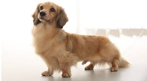
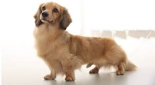

臘腸狗/h2>

特徵
短毛犬種，毛短且密，尾巴內側的毛較粗。長毛犬種，毛長且柔軟，無光澤的直毛，或有一點波浪狀。腳的後側長有豐厚的飾毛。身體長，肌肉發達，能自如地鑽入洞中。頭部長，尖端較細，頭蓋呈拱形。眼暗色，大小適中，如果皮毛是斑紋狀，眼睛則一部分或全部為淡青色。耳朵常動，寬大且長，耳根高。尾沿著背骨下滑、彎曲，尾端向上。前肢肌肉強韌，後肢從後面看是平行的。前足高隆起，而後足稍微小點。標準型犬體重9～12公斤，小型犬體重4.5公斤。
性格
臘腸犬是忠誠、頑皮的犬種，它們喜愛追逐小動物和小鳥的嗜好特別有名。根據美國犬類俱樂部的標準，「臘腸犬聰明、有活力、充滿勇氣甚至有些輕率，能夠堅持地面及地下的工作，任何膽怯的流露都是嚴重缺陷。過份縱容的個體則易於發怒。被毛種類常常被認為與其性格有關。比如，長毛型臘腸犬與其他種類相比，更不易興奮，因為它們是與西班牙獵狗雜交來獲得其長毛的特性的。但是，一些擁有長毛型臘腸犬的人也可能不這樣認為。由於這種犬種的性格特徵和突出的胸部，臘腸犬通常有一個較大的肺，使它們獲得與其體型不大相配的響亮叫聲。
歷史
有人認為臘腸犬起源於古埃及，因為在圖畫上有短腿的獵狗。但是現代的臘腸犬應歸功於歐洲養犬人的苦勞，它們是德國、法國和英國獵犬和鐵利亞的混合種。很多歐洲皇家都養了臘腸犬，其中英國維多利亞女王的朝廷尤其喜愛這種狗。
飼養注意事項
臘腸犬應保持經常運動的習慣以及不宜飼餵過多，以免體型過胖。該犬四肢矮短，行走時易弄髒身體，故應用毛巾拭掉身體上的污物，以保持被毛光澤。長毛品種更要注意被毛梳理，才能保證艷麗的色彩。臘腸犬的牙齒容易長齒垢，應定期予以清除。該犬脊椎骨很長，不宜訓練跳躍，更不要只握前肢拉起它們或讓其上下高層樓梯，以免引起脊椎骨移位或其他疾病。
